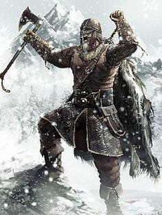

You are the fierce viking warrior Brynolf, son of Ulfrick, and you
are on one of many boats raiding the coasts of England. You jump
ashore with you your fellow mates at yet another monastery that
looks like an easy raid. You first walk towards it and after they
noticed you and their bells start to chime you all start to run with
with a roar of combat.
Halfway there arrows from the forest nearby starts to rain down on you
and your chieftain yells:
"Quick! Change course towards the forest! Shields in front!
